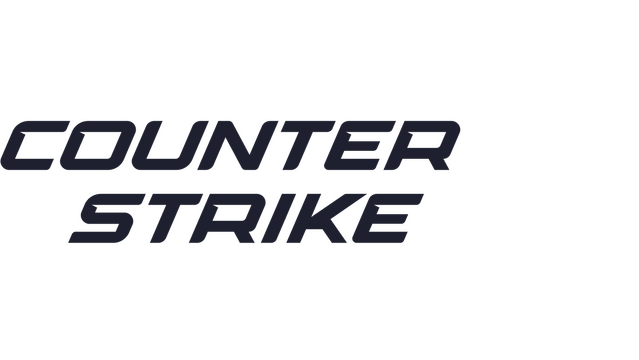

CS2
五对五的战术射击
这个栏目把《反恐精英 2》拆成规则、地图、枪械与操作四条线索，写给刚接触这款游戏、想少走弯路的玩家。
CS2 是 Valve 出品的五对五战术射击游戏：枪法是入场券，地图理解、经济管理、道具与沟通才是决定回合胜负的东西。
本栏目内容
五对五的回合制战场
Counter-Strike 2 是 Valve 开发的第一人称竞技射击游戏。玩家分为恐怖分子（简称 T）与反恐精英（简称 CT）两个阵营，通过枪械、投掷物和团队配合完成各自的任务。它的战场不大：一张地图由若干条通道、几个关键区域和两个包点组成，五个人要在这样一块地方反复争夺几十个回合。
游戏最经典的模式是爆破模式。T 方需要在 A 点或 B 点安装 C4 炸弹，并保护炸弹直到爆炸；CT 方则需要阻止 T 安装炸弹，或者在炸弹安装后把它拆掉。除此之外，消灭敌方全部玩家也可以直接赢下这个回合。
这里有一个新手最容易忽略的前提：一局比赛由多个回合组成，每个回合开始时，玩家用上一回合获得的金钱购买武器、防具和投掷物。 所以 CS2 并不是"谁杀人多谁赢"，完成阵营目标才是最重要的事情——一支只想着对枪、没人愿意去下包的队伍，照样会把优势回合输掉。

CS2 不仅考验枪法，还非常重视地图理解、经济管理、道具使用和团队沟通。熟悉不同枪械的特点、掌握地图上的关键位置、把投掷物用在正确的时间点上，都是提高水平最直接的路径。这四件事里，只有枪法需要长时间的肌肉记忆，其余三件都可以靠"知道"来立刻改善。
本栏目带你从四个方向入门
这个栏目不打算一上来就讲复杂战术，而是按"先知道规则，再认识地图，然后挑装备，最后练操作"的顺序，把 CS2 的基础摊开来讲。四个三级页面各有侧重，可以按顺序读，也可以只看自己最缺的那一块。
新手指南
从回合规则和金钱经济讲起，给出新手最该先练的几项基本功，并说清报点该怎么说、经济局该怎么打。
地图介绍
七张现役地图的中路、包点与关键区域，每张都配游戏内雷达俯视图，重点解释"为什么要争夺这块地方"。
枪械道具
九把常用枪与七种投掷物，按手枪、冲锋枪、步枪、狙击枪和道具用途分类，可以按条件筛选查看。
操作入门
从按键表到急停、静步、蹲下、换弹的练习方法，并指出几个几乎人人都练错的操作习惯。
四个页面之间并不是割裂的：地图介绍里提到的每一处关键位置，最终都要靠操作入门里的急停和投掷物去兑现；枪械道具里提到的经济局，又依赖新手指南里的金钱管理。把这些内容串起来，你就能回答 CS2 里最常见的一个问题——"这一回合，我到底应该做什么"。
开始之前，先记住这几件事
无论你打算从哪一页读起，下面这几个概念都会在后面反复出现，先在这里统一说明：
- T 与 CT：两个阵营，回合目标不同。T 负责安装炸弹，CT 负责阻止或拆除。
- A 点与 B 点：爆破模式中的两个包点，T 只要拿下其中一个就能安放炸弹。
- 中路：多数地图中央的控制区，谁控制它，谁就能更快地在 A、B 之间调动。
- 下包与回防：T 安装 C4 叫下包，CT 在炸弹安装后赶回包点叫回防，残局往往在这两个动作之间决出胜负。
- 经济局：金钱不足以购买完整装备的回合，选择少买甚至不买，把资源留给下一个回合。
- 报点：把敌人的位置和数量用最短的话说给队友，是团队沟通里性价比最高的技能。
{kind=link}

- CS2 是五对五的第一人称竞技射击游戏，最经典的模式是爆破模式，T 与 CT 的回合目标并不相同。
- 一局比赛由多个回合组成，回合目标优先于击杀数，只对枪不完成目标的队伍会输。
- 除了枪法，地图理解、经济管理、道具使用和团队沟通同样决定胜负，而且它们比枪法更容易靠学习改善。
- 本栏目分四个三级页面展开：新手指南、地图介绍、枪械道具、操作入门，可以按顺序读，也可以按需查阅。
- 先记住 T/CT、A/B 点、中路、经济局与报点这几个概念，后面的内容会反复用到。